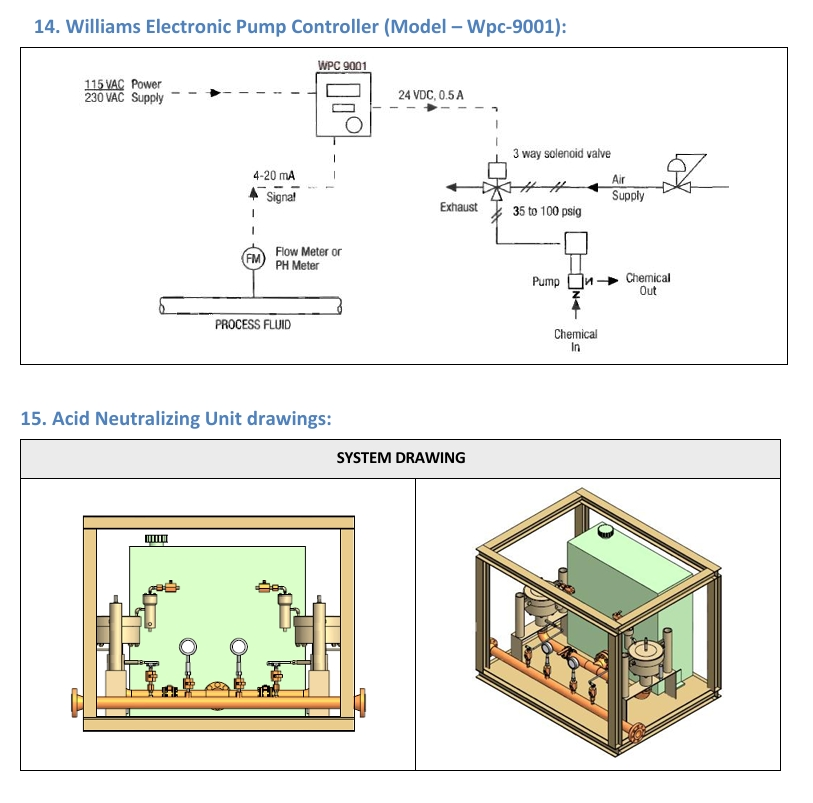
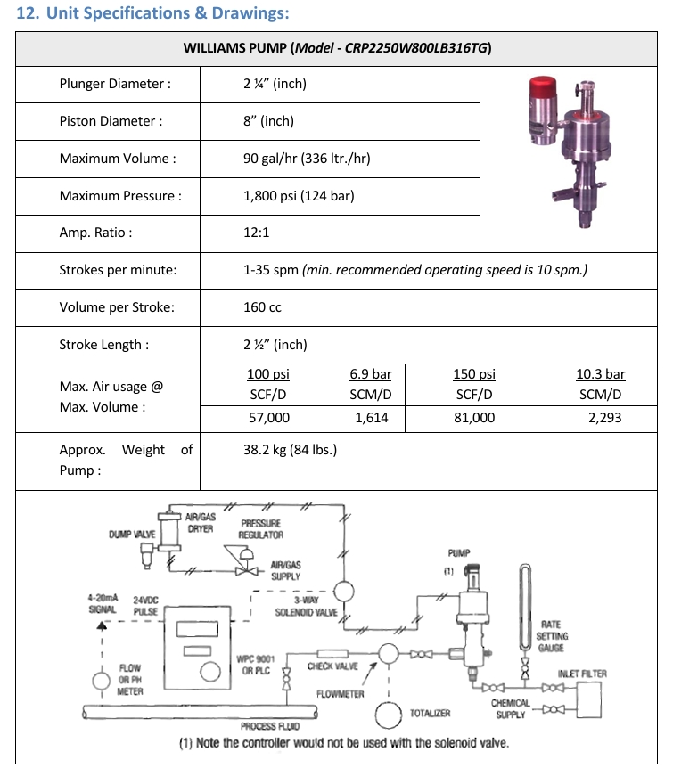
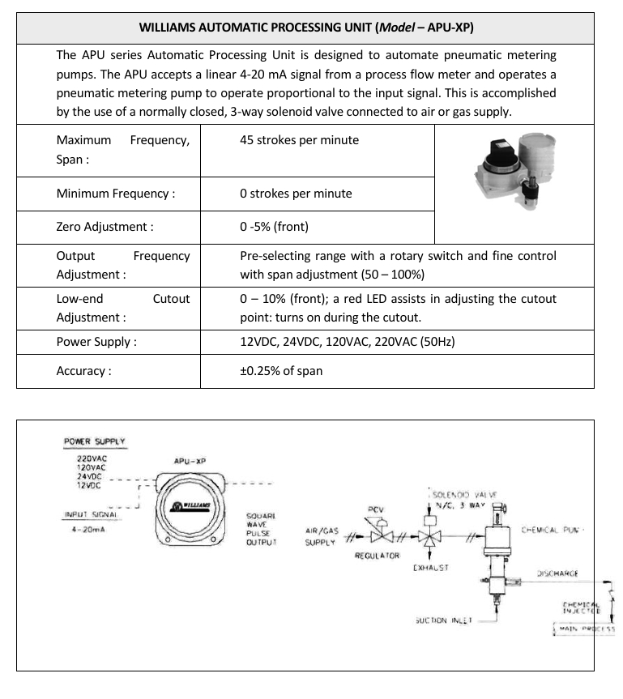
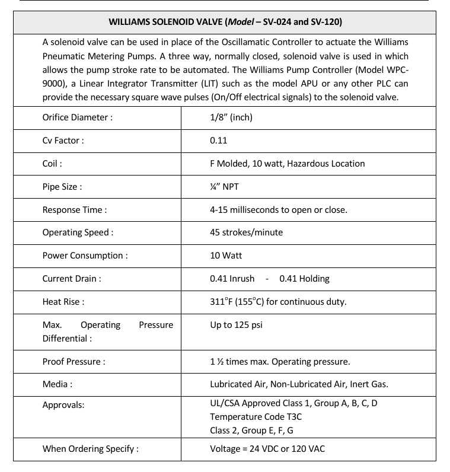
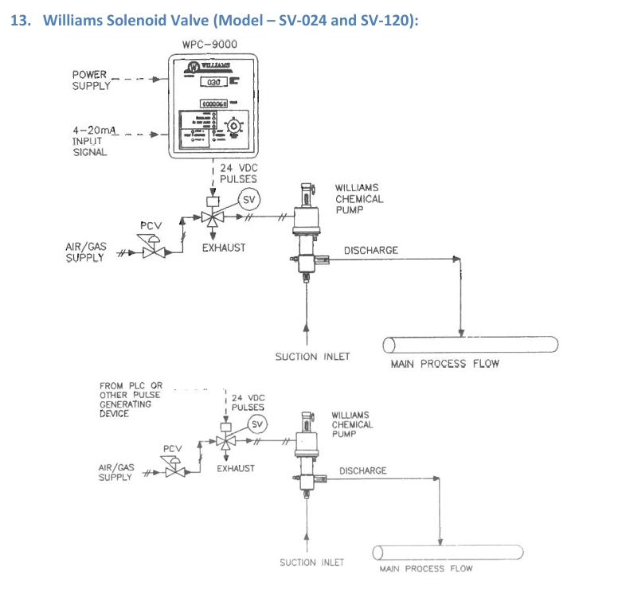
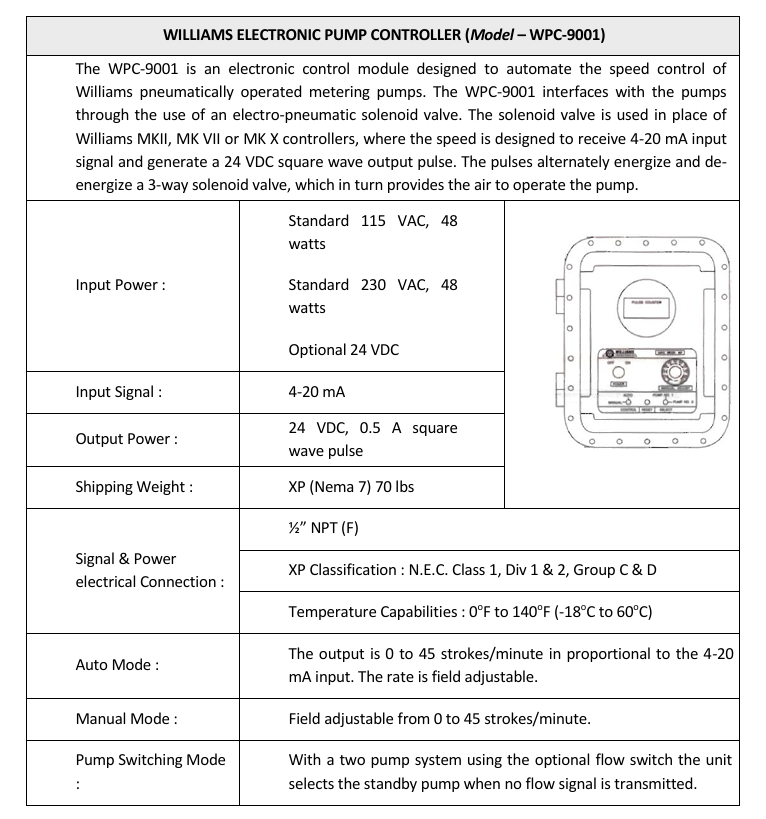

How to Operate H2S sweetening unit
H₂S Sweetening Unit
-
Purpose of H₂S Sweetening Unit:
The H₂S Sweetening Unit is used in the sour oil and gas industry during well clean-up, backflow operations, and production testing, especially after acid stimulation jobs (HCl). Its main purpose is to reduce Hydrogen Sulfide (H₂S) concentration in produced fluids before transferring them to flowlines, processing facilities, or storage tanks.
-
Why H₂S Must Be Removed:
- H₂S is a highly toxic gas and dangerous to personnel.
- Causes severe corrosion to pipelines and production equipment.
- Reduces the integrity and lifespan of upstream facilities.
- Creates safety and environmental risks during production operations.
- May prevent produced fluids from being accepted into client facilities.
-
How the Sweetening Process Works:
- Sour oil or gas containing dissolved H₂S enters the process stream.
- Specialized H₂S scavenger chemicals are injected into the flow.
- The chemicals react with Hydrogen Sulfide and neutralize it.
- H₂S concentration is reduced to an acceptable level.
- The treated fluid is transferred safely to production facilities or storage tanks.
-
Target H₂S Concentration:
The objective of the sweetening process is to reduce H₂S concentration to approximately 0 – 20 ppm, producing what is commonly referred to as "Sweet Oil" or "Sweet Gas".
-
Operational Benefits:
- Protects personnel from toxic H₂S exposure.
- Reduces corrosion and erosion in pipelines and equipment.
- Improves asset integrity and operational reliability.
- Supports Zero Flaring and environmentally responsible operations.
- Allows direct transfer of produced fluids to client flowlines and facilities.
- Minimizes maintenance and equipment damage.
-
Chemical Characteristics:
- Environmentally friendly formulation.
- Mainly organic in nature.
- Produces minimal sediment and deposits.
- Efficiently scavenges dissolved H₂S from oil and gas streams.
-
Process Flow Summary:
Sour Oil / Gas │ ▼ H₂S Sweetening Unit (Chemical Injection) │ ▼ H₂S Scavenging Reaction │ ▼ Sweet Oil / Gas (0 - 20 ppm H₂S) │ ▼ Flowline / Storage Tank / Production Facility -
Key Takeaway:
The H₂S Sweetening Unit is a critical safety and integrity system that injects H₂S scavenger chemicals into sour hydrocarbon streams to reduce Hydrogen Sulfide levels, protect personnel, minimize corrosion, and ensure safe transportation and processing of produced fluids.

H₂S Sweetening Unit – Purpose & Policy
-
Purpose of the Procedure:
This operating procedure provides detailed guidelines for the safe and proper operation of H₂S Sweetening Units during well clean-up and backflow operations. It ensures the reduction of Hydrogen Sulfide (H₂S) concentration while protecting personnel, equipment, and the environment.
-
Main Objectives:
- Reduce H₂S concentration in produced oil and gas streams.
- Protect personnel from exposure to toxic H₂S gas.
- Prevent corrosion and damage to production equipment.
- Protect the environment from hazardous emissions.
- Ensure safe handling of chemicals according to MSDS (Material Safety Data Sheet).
- Maintain compliance with company HSEQ Policies and Procedures.
-
Chemical Safety Requirements:
- Always review the MSDS before handling sweetening chemicals.
- Use the required Personal Protective Equipment (PPE).
- Follow approved storage, handling, and disposal procedures.
- Immediately report any chemical spill or exposure incident.
-
Policy Coverage:
This procedure applies to all types of H₂S Sweetening Units used during Surface Well Testing (SWT) operations and follows the company's Standard Operating Procedures (SOPs).
-
Applicable Operations:
- Rig-based well testing operations.
- Rigless well testing operations.
- Onshore installations and facilities.
- Offshore installations and facilities.
- Temporary and permanent sweetening unit setups.
-
HSEQ Compliance:
- Health: Protect personnel from H₂S exposure.
- Safety: Ensure safe operation of equipment and chemicals.
- Environment: Prevent pollution and harmful emissions.
- Quality: Maintain operational standards and efficiency.
-
Key Takeaway:
The purpose of this procedure is to ensure the safe operation of H₂S Sweetening Units, proper handling of sweetening chemicals, reduction of H₂S levels in produced fluids, and protection of personnel, assets, and the environment while maintaining full compliance with HSEQ standards.
-
Interview Question
Q: Why is the H₂S Sweetening Unit Operating Procedure important?A: It provides standardized guidelines for safely operating H₂S Sweetening Units, reducing H₂S concentration in produced fluids, protecting personnel and equipment, ensuring environmental compliance, and maintaining HSEQ standards during well testing operations.

H₂S Sweetening Unit – Design Specifications
-
Maximum Operating Pressure:
The H₂S Sweetening Unit is designed to safely operate at a maximum pressure of 1,440 psi. All components including piping, valves, pumps, and instrumentation are selected and rated to withstand this operating pressure.
-
H₂S Sour Service Design:
The system is specifically designed for Sour Service applications, meaning it can safely handle fluids containing Hydrogen Sulfide (H₂S). Materials are selected to resist corrosion, sulfide stress cracking (SSC), and other H₂S-related damage mechanisms.
-
Fully Automated System:
The unit operates automatically through an advanced control system that monitors process conditions and regulates chemical injection rates. A manual override option is also available, allowing operators to take control during abnormal situations or maintenance activities.
-
Intrinsically Safe PLC:
The unit is equipped with an Intrinsically Safe PLC (Programmable Logic Controller). This design limits electrical energy to levels that cannot ignite flammable gases, making it suitable for hazardous oil and gas environments.
-
Zone II Hazardous Area Certification:
The system is designed for Zone II Applications, where explosive gas atmospheres are not normally present but may occur occasionally under abnormal operating conditions. This ensures compliance with oilfield hazardous area requirements.
-
Environmentally Friendly H₂S Scavenger:
The sweetening process utilizes an environmentally friendly H₂S scavenger reagent that reacts with Hydrogen Sulfide and reduces its concentration to acceptable levels. The chemical is designed to minimize environmental impact while maintaining high sweetening efficiency.
-
Operational Advantages:
- Safe operation in sour service environments.
- Reduced corrosion and equipment damage.
- Automatic chemical injection control.
- Enhanced personnel safety in hazardous areas.
- Compliance with oil & gas industry standards.
- Reduced environmental impact through eco-friendly chemicals.
-
Key Takeaway:
The H₂S Sweetening Unit is a fully automated sour-service system designed for oil and gas operations. It operates up to 1,440 psi, utilizes an intrinsically safe PLC, is certified for Zone II hazardous areas, and injects environmentally friendly H₂S scavenger chemicals to safely sweeten produced oil and gas streams.

H₂S Sweetening Unit – Operating Philosophy
-
System Overview:
The H₂S Sweetening Unit is designed to remove and neutralize Hydrogen Sulfide (H₂S) from produced oil and gas streams before sending them to client facilities, flowlines, disposal wells, or storage tanks. The objective is to reduce H₂S concentration to an acceptable level of 0 – 20 ppm.
-
Main Components:
- H₂S Probe Analyzer installed in the process line.
- 4–20 mA Signal Output transmitting H₂S readings.
- PLC (Programmable Logic Controller) for automatic control.
- Pneumatic Chemical Injection Pump.
- EMO-XXXX Organic Base Chemical or approved alternative scavenger.
-
How the System Works:
- The H₂S probe continuously measures H₂S concentration in the process stream.
- The probe sends a 4–20 mA signal to the PLC.
- The PLC calculates the required chemical injection rate.
- The pneumatic dosing pump injects the required amount of scavenger chemical.
- The injected chemical reacts with H₂S and neutralizes it.
- The treated fluid continues through the process with reduced H₂S content.
-
Chemical Injection Locations:
- Upstream of the Special Separator inlet.
- Within the flowline before separation.
- At the oil outlet line before reinjection.
- Before storage tank farms or client flowlines.
Injecting upstream provides longer mixing time, improving H₂S removal efficiency.
-
Factors Affecting Chemical Dosage:
- Measured H₂S concentration (ppm).
- Oil or gas flow rate.
- Expected H₂S levels from the job program.
- Reservoir rock characteristics.
- Client-required sweetening specifications.
-
Final Objective:
The system continuously monitors H₂S concentration and automatically adjusts chemical injection rates to ensure treated oil and gas meet the client's approved specification of 0 – 20 ppm H₂S, while protecting personnel, equipment integrity, and the environment.
-
Process Flow Summary:
Well Flow ↓ H₂S Probe Measures H₂S ↓ 4–20 mA Signal to PLC ↓ PLC Calculates Dosage Rate ↓ Pneumatic Injection Pump ↓ EMO-XXXX Chemical Injection ↓ H₂S Neutralization ↓ Sweetened Oil / Gas ↓ Client Flowline / Storage Tank
H₂S Sweetening Unit – Pump Assembly
-
Purpose of Proper Pump Installation:
The chemical injection pump must be installed correctly to ensure maximum pumping efficiency, reliable chemical delivery, easier maintenance, and long-term operational performance.
-
Pump Orientation:
- Install the pump in a vertical upright position.
- The diaphragm section must be located at the top.
- Allow sufficient space around the pump for maintenance and inspection.
- Ensure easy access to all fittings, valves, and moving parts.
-
Suction and Check Valve Position:
For optimum performance, the pump suction line and check valve must be installed pointing straight downward.
Diaphragm ▲ │ Pump │ ▼ Suction Line ▼ Check ValveThis orientation allows the check valve to function correctly and improves pump priming and chemical flow.
-
Check Valve Design Consideration:
The pump check valve is designed without a supporting spring. Therefore, it relies on gravity to assist proper seating and sealing. Incorrect installation may reduce efficiency and affect suction performance.
-
Chemical Reservoir Tank Position:
- Install the chemical reservoir tank at a higher elevation than the pump.
- This allows chemical fluid to naturally flow toward the pump suction.
- Provides sufficient Net Positive Suction Head (NPSH).
- Reduces the possibility of cavitation and loss of prime.
Chemical Tank ▲ │ │ Gravity Flow ▼ Injection Pump -
Benefits of Correct Installation:
- Improved pump efficiency.
- Reliable chemical injection rates.
- Reduced maintenance requirements.
- Better suction performance.
- Prevention of cavitation and air locking.
- Longer pump service life.
-
Installation Rule to Remember:
Diaphragm → UP Pump Body → Vertical Suction Line → DOWN Check Valve → DOWN Chemical Tank → Higher than Pump NPSH → Sufficient
H₂S Sweetening Unit – Start-Up Procedure
-
Purpose:
The start-up procedure ensures that the H₂S Sweetening Unit is properly connected, powered, supplied with air and chemicals, and fully prepared for safe automatic operation before processing sour oil or gas streams.
-
Step 1 – Connect to Process Line:
Connect the sweetening unit to the process flow line using 3" Figure 602 inlet and 3" Figure 602 outlet connections.
This allows the process fluid containing H₂S to flow through the sweetening system.
-
Step 2 – Connect Instrument Air:
Connect the unit air supply from one of the following sources:
- Instrument Air Compressor
- Diesel Air Compressor
- Approved Air Supply Source
The PLC controller uses this air supply to operate the pneumatic chemical injection system.
-
Step 3 – Verify Air Pressure:
Ensure air supply pressure is maintained between:
100 – 150 psig
Insufficient air pressure may affect pump performance and chemical injection rates.
-
Step 4 – Connect POS-8 Relay:
Connect the air supply line to the POS-8 Relay of the chemical injection pump according to the system drawing.
-
Step 5 – Set Pressure Regulators:
Verify that all unit pressure regulators are adjusted to their required operating range and are capable of operating between:
0 – 100%
-
Step 6 – PLC Controller Check:
- Ensure the PLC controller is switched OFF before startup.
- Verify the controller mode is set to AUTO.
- Do not leave the controller in MANUAL (Override) mode unless specifically required.
AUTO mode allows the PLC to automatically control chemical injection based on H₂S readings.
-
Step 7 – Electrical Power Supply:
Connect the PLC controller to a suitable power source:
- 50 Hz or 60 Hz Supply
- 120 VAC or 220 VAC Input
- Converted internally to 24 VDC
-
Step 8 – Fill Chemical Tank:
Fill the unit chemical reservoir with the required EMO-XXXX H₂S Scavenger Chemical.
Ensure sufficient chemical volume is available before starting operations.
-
Safety Requirement:
The chemical MSDS (Material Safety Data Sheet) must always be available on site for reference during handling, operation, storage, or emergency situations.
-
Final Function Test:
- Perform a complete function test of the unit.
- Verify PLC operation.
- Verify air system operation.
- Verify chemical injection system operation.
- Confirm all alarms and safety systems are operational.
Although the unit has been tested in the workshop, a final site function test is mandatory.
-
Ready for Operation:
Process Line Connected ↓ Air Supply Connected ↓ 100–150 psig Verified ↓ POS-8 Relay Connected ↓ Regulators Checked ↓ PLC Set to AUTO ↓ Power Connected (24VDC) ↓ Chemical Tank Filled ↓ MSDS Available ↓ Function Test Completed ↓ UNIT READY FOR OPERATION
H₂S Sweetening Unit – Operating Procedure
-
Q1: What should be verified before operating the H₂S Sweetening Unit?
Ensure all process, air, electrical, and instrument connections are correctly installed according to the approved P&ID (Piping & Instrumentation Diagram).
-
Q2: Why is checking the P&ID important?
The P&ID confirms that all equipment, valves, instruments, and control systems are connected correctly and safely.
-
Q3: What is the first operational action after verifying connections?
Turn ON the PLC electronic controller power supply.
-
Q4: How can the operator confirm that the PLC is energized?
By checking that the panel indicator lights are illuminated and operating normally.
-
Q5: What condition is required for the system to start functioning automatically?
Adequate compressed air supply must be available to the unit.
-
Q6: What is the function of the H₂S Monitor/Indicator?
It continuously samples the process stream and measures the concentration of Hydrogen Sulfide (H₂S).
-
Q7: What type of signal does the H₂S analyzer send to the control system?
It sends a control signal to the PLC, which adjusts the chemical injection rate accordingly.
-
Q8: What happens when H₂S concentration increases?
The PLC increases the chemical injection dosage to remove more H₂S from the process stream.
-
Q9: What happens when H₂S concentration decreases?
The PLC reduces the chemical injection dosage to optimize chemical consumption.
-
Q10: What is the purpose of automatic dosage adjustment?
To maintain H₂S levels within the acceptable target range while minimizing chemical usage.
-
Q11: What happens after the PLC sends a command to the injection pump?
The pump starts injecting H₂S scavenger chemical into the process line.
-
Q12: What is the purpose of injecting the scavenger chemical?
To chemically react with and remove Hydrogen Sulfide from the produced fluids.
-
Q13: What is the sweetening process?
Sweetening is the treatment process that reduces H₂S concentration to acceptable operational limits.
-
Q14: Is chemical injection performed manually during normal operation?
No. Under AUTO mode, the PLC automatically controls the injection rate based on H₂S readings.
-
Q15: What role does the air supply play during operation?
The air supply powers the pneumatic components and drives the chemical injection pump.
-
Q16: What should the operator monitor during operation?
H₂S readings, pump performance, air pressure, chemical tank level, and PLC status indicators.
-
Q17: What should be done if the injection pump fails to operate correctly?
Consult the troubleshooting guide and inspect the system for faults.
-
Q18: When should instrument support be contacted?
When troubleshooting cannot resolve the problem or when instrument-related faults are suspected.
-
Q19: What is the overall purpose of the operating procedure?
To continuously monitor H₂S concentration and automatically inject the correct amount of scavenger chemical for safe sweetening operations.
-
Q20: What is the expected result of proper operation?
Safe reduction of H₂S concentration to approved limits while protecting personnel, equipment, and the environment.
Operating Sequence Summary
Verify P&ID Connections
↓
Power ON PLC Controller
↓
Confirm Air Supply Available
↓
H₂S Analyzer Starts Sampling
↓
PLC Receives H₂S Signal
↓
PLC Calculates Required Dosage
↓
Injection Pump Starts
↓
Scavenger Chemical Injected
↓
H₂S Concentration Reduced
↓
Continuous Automatic Control
H₂S Sweetening Unit – System Disconnection Procedure
-
Q1: What is the purpose of the System Disconnection procedure?
The procedure ensures the H₂S Sweetening Unit is safely isolated, depressurized, cleaned, and disconnected after operations are completed.
-
Q2: What is the first step when disconnecting the system?
Reset all pressure regulators to zero to eliminate operating pressure from the unit.
-
Q3: Why should pressure regulators be reset to zero?
To prevent accidental pressure buildup and ensure safe shutdown of the pneumatic and chemical injection systems.
-
Q4: What should be done after resetting the regulators?
Turn OFF the power supply switch of the PLC electronic controller.
-
Q5: Why is the PLC controller switched OFF before disconnection?
To stop all automatic monitoring, control, and chemical injection functions.
-
Q6: What is the next step after turning off the PLC?
Disconnect or unplug the electronic controller from its power source.
-
Q7: Why should the controller be unplugged?
To completely isolate the system electrically and prevent accidental startup.
-
Q8: What does "Depressurize the System" mean?
It means releasing all trapped pressure from the process lines, pump, hoses, and associated equipment.
-
Q9: Why is depressurization important?
It prevents injuries, equipment damage, and uncontrolled release of fluids or chemicals during disconnection.
-
Q10: What should the system pressure be before disconnecting any lines?
The system pressure should be reduced to zero psig.
-
Q11: What is meant by "Bleed Off" the system?
Bleeding off means safely venting any remaining trapped pressure from the unit.
-
Q12: What is the purpose of flushing the system with water?
To remove residual H₂S scavenger chemicals and clean the internal piping and equipment.
-
Q13: Which parts benefit from water flushing?
The injection pump, tubing, process piping, valves, and chemical injection lines.
-
Q14: Why is flushing important before storage or transportation?
It prevents chemical deposits, blockages, corrosion, and contamination inside the system.
-
Q15: What chemicals are typically removed during flushing?
Residual EMO-XXXX H₂S scavenger chemicals or other approved treatment chemicals.
-
Q16: What is the final physical step in the disconnection procedure?
Disconnect all system lines from the process lines.
-
Q17: Which connections are normally disconnected?
Process inlet lines, outlet lines, air supply lines, and chemical injection connections.
-
Q18: Why should process lines only be disconnected after depressurization?
To avoid sudden release of pressure, fluids, or chemicals that could cause injury or equipment damage.
-
Q19: What condition should the unit be in after completing all disconnection steps?
The unit should be pressure-free, electrically isolated, clean, and safe for maintenance, transportation, or storage.
-
Q20: What are the main safety objectives of the disconnection procedure?
To protect personnel, equipment, and the environment by ensuring a controlled and safe shutdown process.
System Disconnection Flow
Finish Operation
↓
Reset Regulators to Zero
↓
Switch OFF PLC Controller
↓
Disconnect Power Supply
↓
Depressurize System
↓
Bleed Off Remaining Pressure
↓
Flush System with Water
↓
Disconnect Process Lines
↓
Ready for Maintenance / Storage / Transport
Course Operational layouts






-
Q1: What is the H₂S Sweetening Unit used for?
It is used in sour oil and gas operations to treat produced fluids containing Hydrogen Sulfide (H₂S), reducing toxicity and corrosion risks before sending fluids to flow lines or storage tanks.
-
Q2: What is the main objective of the system?
To reduce H₂S concentration in produced fluids to a safe acceptable range (0–20 ppm) while protecting personnel, equipment integrity, and the environment.
-
Q3: How does the system work in general?
The system uses an H₂S probe (4–20 mA signal) connected to a PLC that automatically controls a chemical injection pump to dose scavenger chemicals based on real-time H₂S readings.
-
Q4: What chemicals are used in the process?
Environmentally friendly organic scavenger chemicals (e.g., EMO-XXXX) are injected to neutralize dissolved H₂S in the flow stream.
-
Q5: What is the role of the PLC system?
The PLC acts as the central controller, receiving signals from the H₂S analyzer and adjusting pump injection rates automatically or manually.
-
Q6: What is the operating philosophy?
The system continuously monitors H₂S levels and adjusts chemical dosing in real time to maintain safe limits below 20 ppm during well testing and backflow operations.
-
Q7: What are the key safety features?
The unit is designed for Zone II hazardous areas, includes intrinsically safe PLC systems, and is integrated with ESD shutdown to protect personnel, equipment, and the environment.
-
Q8: What is required during start-up?
Proper mechanical, electrical, and air connections must be completed, regulators set correctly, chemical tank filled, and PLC powered in AUTO mode before operation begins.
-
Q9: What is the normal operating process?
The H₂S sensor detects gas levels, sends a 4–20 mA signal to the PLC, which controls the pump to inject the required chemical dosage, maintaining continuous automatic sweetening.
-
Q10: What happens when H₂S increases or decreases?
The PLC increases chemical injection when H₂S rises and reduces dosage when levels drop to optimize chemical consumption and maintain target limits.
-
Q11: What is the pump system role?
The pneumatic metering pump injects scavenger chemicals into the process line, controlled by air supply and PLC signals for precise dosing.
-
Q12: What is the function of the air system?
Instrument air powers the pneumatic pump system and ensures stable and controlled injection performance.
-
Q13: What happens during shutdown or disconnection?
The system is safely isolated by resetting regulators, switching off PLC, depressurizing, flushing with water, and disconnecting all process lines.
-
Q14: Why is flushing important?
Flushing removes residual chemicals, prevents corrosion and blockages, and prepares the system for storage or transport.
-
Q15: What are the main safety principles?
Safe handling of toxic H₂S gas, controlled chemical injection, pressure isolation, and emergency shutdown capability are key safety priorities.
-
Q16: What is the overall system design based on?
The system is designed for high-pressure sour service up to 1440 psi, Zone II environments, and fully automated PLC-based control with manual override options.
-
Q17: What is the final outcome of the system?
Safe reduction of H₂S levels in produced fluids, ensuring compliance with environmental standards, operational safety, and asset protection.
Course Qualification Exam Portal
- Maintain a distraction-free verification workspace atmosphere before launching exam processing.
- Confirm network hardware parameters display steady connectivity limits to ensure seamless execution.
- Do not navigate away from the validation page view array or refresh active framing arrays during timers tracking.